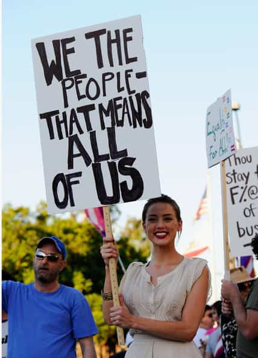
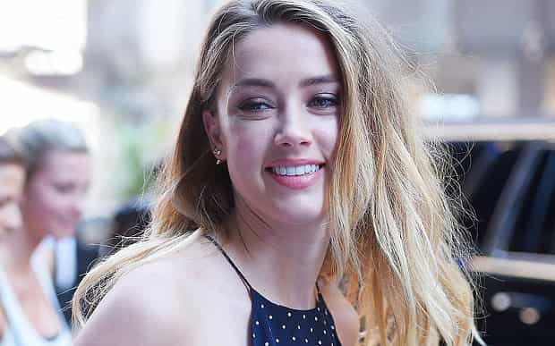

< < < Back
Bisexual Attention Seeker Amber Heard Thinks She’s Above The Law – Return Of Kings
Three months ago, Johnny Depp and his wife Amber Heard, an actress more known for promoting her bisexuality than the quality of her films, brought their dogs illegally into Australia, without the requisite paperwork.
Like any sensible First World country, Australia tries to control the importation of animals to prevent disease and other risks. After the canines’ presence was inadvertently publicized on social media, the celebrity owners were given 48 hours to remove the animals or they would be euthanized.
The omission set off a gargantuan scandal and many rushed to ridicule the Australian government’s “heavy-handed” response (it’s actually standard procedure, similar to destroying abandoned luggage). Amber Heard spectacularly threatened to boycott Australia because government officials were looking for “15 minutes of fame” (if so, maybe like her bisexuality marketing?).
She nonetheless came back to Queensland, where Depp is filming another Pirates of the Caribbean film, and was charged by Australian authorities with the unauthorized importation of animals and making a false declaration.
Do as I say, not as I do

Is this the only legal equality Amber Heard actually believes in?
Fundamentally, Heard’s sexuality is her business. And if she wants gay rights, you would expect her to logically support gay marriage. What I find amusing about her “advocacy,” though, is the way that it dovetails nicely with her career.
There’s no better way to market yourself as your working life starts to really take off than revealing you bed other women and support gay rights. If you haven’t already noticed as well, celebrities invariably support those causes that are a) widely popular, or b) won’t lose them financial opportunities.
Fast forward a little while and here we have Heard lambasting the Australian government for having the audacity to investigate why dogs entered Australia without the proper permits. It appears that equality only goes so far with Amber Heard. In the context of being a celebrity who profits from every second of attention, she advocated openly and vociferously for gay marriage equality. Yet as soon as the spotlight of responsibility is turned on her, she thinks she and her entourage are above the rules that govern everyone else.
Can you, for instance, imagine yourself arguing with the TSA in New York or Los Angeles about why two canines weren’t declared and the paperwork was falsified?
Equality under the law includes being investigated like everyone else

Funnily enough, Heard accused the Australian Agriculture Minister of attention seeking!
I will not prejudge whether Heard is guilty or not of smuggling in the dogs and falsifying papers. Who is to blame is for a court to decide. But Heard’s rebuke of the Australian government speaks volumes about her grandiose sense of entitlement. People are accused of crimes, investigated because of that accusation and taken through the legal system to test the evidence all the time. How is Heard so special that she deserves avoiding the treatment the rest of us would face?
Saying that someone thinks they are above the law and not assuming their guilt aren’t mutually exclusive concepts. It’s sadly common amongst the elite that they pontificate a standard for all in one area and afterwards make their own personal standard in another.
When, using just one example, Reese Witherspoon’s husband was pulled over on suspicion of drink driving, she drunkenly asked and perhaps threatened the officer: “Don’t you know who I am?”
Celebrityhood is unabashedly replete with case studies of those who pursue all manner of popular causes (feminism, gay rights, socialism) and then are exposed for elevating themselves ahead of the pack. Heard is just one of the more recent demonstrations of this “I’m above you” culture.
Selectivity is the rule of the game

Life gets a bit melancholic when you’re held to the same standards as everyone else.
What is most disturbing about the Amber Heard incident is the way in which legions of fans (or simply dog lovers) rushed to sign petitions to save her and Depp’s dogs. Forgetting the 500 dogs who will be euthanized by animal control in their own city this month, these keyboard commandos came to save the day. It is a tragic sign of our times that large numbers of people respond to these celebrities as if they are indeed above the law.
SJWs and many celebrities have the distinct ability to project pseudo-morality that is believed. In the meantime, they behave, as far as they can, without the restrictions they try to impose on or preach to others.
Be wary of the Amber Heards of the world. They come in many non-famous shades, too. The girl who says she wants a respectful, two-way relationship with you, but tries to coax out whatever she can financially, emotionally or regarding your time. The co-worker who rants about feminism and “mansplaining” while “asserting herself” in the bitchiest way possible. The forms are numerous.
As for now, let’s hope Amber Heard starts to feel the equality she’s always rallying for… in a courtroom.
Read More: Is Bruce Jenner Having A Sex Change Because Females In His Family Get More Attention?